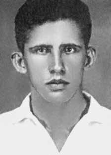

Cloves
Dias
de Amorim
CIRCUNSTÂNCIAS DA MORTE
Cloves Dias Amorim morreu no dia 23 de outubro de 1968, após ter sido atingido por disparo de arma de fogo enquanto participava de uma manifestação estudantil no centro da cidade do Rio de Janeiro.
Estudantes e jornalistas protestavam contra a morte de Luiz Paulo da Cruz Nunes, que havia acontecido no dia anterior, durante um ataque realizado por agentes do Departamento de Ordem Política e Social (DOPS-GB) e da Polícia Militar (PM-GB) à Faculdade de Ciências Médicas da Universidade do Estado da Guanabara e ao Hospital Pedro Ernesto, localizados no bairro de Vila Isabel, no Rio de Janeiro. A repressão policial contra os manifestantes começou na esquina entre a Rua de Santana e a Avenida Presidente Vargas, após estudantes apedrejarem o prédio do jornal O Globo. No intuito de dispersar os manifestantes, agentes do Estado dispararam rajadas de metralhadoras e tiros de revólveres.
De acordo com reportagem do jornal Correio da Manhã, o capitão Salatiel, que auxiliava o responsável pela operação, coronel Hernani, ordenou aos seus comandados que atirassem na direção de repórteres e fotógrafos que registravam os acontecimentos. Durante aproximadamente 15 minutos, os policiais atiraram contra os manifestantes, que, apesar disso, não se dispersaram completamente. Cloves Dias Amorim foi atingido por um tiro e morreu no local.
De acordo com o jornal Correio da Manhã, os tiros que atingiram Cloves foram disparados por agentes do DOPS que estavam em uma camioneta verde, localizada próxima a um jipe do comando da Polícia Militar. Consta no auto de exame cadavérico de Cloves ferimento na altura do pescoço, resultante de disparo feito à longa distância, da esquerda para a direita, de frente para trás e, por fim, apresentando uma trajetória ligeiramente de cima para baixo. A certidão de óbito apresentada declarava que a morte de Cloves decorreu de “ferimento transfixante do pescoço com dilaceração da medula cervical”.
A Comissão Especial sobre Mortos e Desaparecidos (CEMDP) indeferiu em 7 de agosto de 1997 o pedido apresentado pela família de Cloves, sob o argumento de que não estava comprovada sua atuação política e de que as ruas da cidade onde ocorreram os fatos tenham se transformado em “dependência policial assemelhada”. Em função da promulgação da Lei n o 10.875/2004 e a correspondente ampliação do escopo da legislação anterior, o caso é levado novamente em consideração, sendo deferido em 7 de outubro de 2004.
Os restos mortais de Cloves Dias Amorim foram enterrados no cemitério do Murundu, no Rio de Janeiro.
Cloves Dias Amorim died on October 23, 1968, after being hit by a gunshot while participating in a student demonstration in the city center of Rio de Janeiro.
Students and journalists were protesting against the death of Luiz Paulo da Cruz Nunes, which had occurred the day before, during an attack carried out by agents from the Department of Political and Social Order (DOPS-GB) and the Military Police (PM-GB) on the Faculty of Medical Sciences of the State University of Guanabara and the Pedro Ernesto Hospital, located in the Vila Isabel neighborhood, in Rio de Janeiro. Police repression against protesters began on the corner of Rua de Santana and Avenida Presidente Vargas, after students stoned the building of the newspaper O Globo. In order to disperse the protesters, state agents fired machine gun bursts and shot from revolvers.
According to a report in the Correio da Manhã newspaper, Captain Salatiel, who was assisting the person responsible for the operation, Colonel Hernani, ordered his men to shoot in the direction of reporters and photographers who were recording the events. For approximately 15 minutes, the police shot at the protesters, who, despite this, did not disperse completely. Cloves Dias Amorim was shot and died at the scene.
According to the newspaper Correio da Manhã, the shots that hit Cloves were fired by DOPS agents who were in a green truck, located next to a Military Police command jeep. Cloves' cadaveric examination records include a wound at the neck, resulting from a long-distance shot, from left to right, from front to back and, finally, with a trajectory slightly from top to bottom. The death certificate presented stated that Cloves' death resulted from a “transfixing wound to the neck with laceration of the cervical cord”.
On August 7, 1997, the Special Commission on the Dead and Missing Persons (CEMDP) rejected the request presented by Cloves' family, on the grounds that his political activity had not been proven and that the streets of the city where the events occurred had been transformed into a “similar police facility”. Due to the promulgation of Law No. 10,875/2004 and the corresponding expansion of the scope of the previous legislation, the case was taken into consideration again, being approved on October 7, 2004.
The remains of Cloves Dias Amorim were buried in the Murundu cemetery, in Rio de Janeiro.
Cloves Dias Amorim murió el 23 de octubre de 1968, tras ser alcanzado por un disparo mientras participaba en una manifestación estudiantil en el centro de la ciudad de Río de Janeiro.
Estudiantes y periodistas protestaban por la muerte de Luiz Paulo da Cruz Nunes, ocurrida la víspera, durante un ataque perpetrado por agentes del Departamento de Orden Político y Social (DOPS-GB) y de la Policía Militar (PM-GB) a la Facultad de Ciencias Médicas de la Universidad Estadual de Guanabara y al Hospital Pedro Ernesto, ubicado en el barrio Vila Isabel, en Río de Janeiro. La represión policial contra los manifestantes comenzó en la esquina de la Rua de Santana y la Avenida Presidente Vargas, luego de que estudiantes apedrearan el edificio del periódico O Globo. Para dispersar a los manifestantes, agentes estatales dispararon ráfagas de ametralladora y disparos con revólveres.
Según informa el diario Correio da Manhã, el capitán Salatiel, que ayudaba al responsable de la operación, coronel Hernani, ordenó a sus hombres disparar en dirección a los reporteros y fotógrafos que registraban los hechos. Durante aproximadamente 15 minutos, la policía disparó contra los manifestantes, quienes, a pesar de ello, no se dispersaron por completo. Cloves Dias Amorim recibió un disparo y murió en el lugar.
Según el diario Correio da Manhã, los disparos que alcanzaron a Clove fueron realizados por agentes del DOPS que se encontraban en un camión verde, ubicado al lado de un jeep del comando de la Policía Militar. Los registros de examen cadavérico de Cloves incluyen una herida en el cuello, producto de un disparo de larga distancia, de izquierda a derecha, de adelante hacia atrás y, finalmente, con una trayectoria ligeramente de arriba hacia abajo. El certificado de defunción presentado indicaba que la muerte de Cloves se debió a una “herida traspasante en el cuello con laceración de la médula cervical”.
El 7 de agosto de 1997, la Comisión Especial sobre Muertos y Desaparecidos (CEMDP) rechazó la solicitud presentada por la familia de Cloves, alegando que no se había acreditado su actividad política y que las calles de la ciudad donde ocurrieron los hechos habían sido transformadas en una “instalación policial similar”. Con motivo de la promulgación de la Ley nº 10.875/2004 y la correspondiente ampliación del alcance de la legislación anterior, el caso fue nuevamente tomado en consideración, siendo aprobado el 7 de octubre de 2004.
Los restos de Cloves Dias Amorim fueron enterrados en el cementerio de Murundu, en Río de Janeiro.